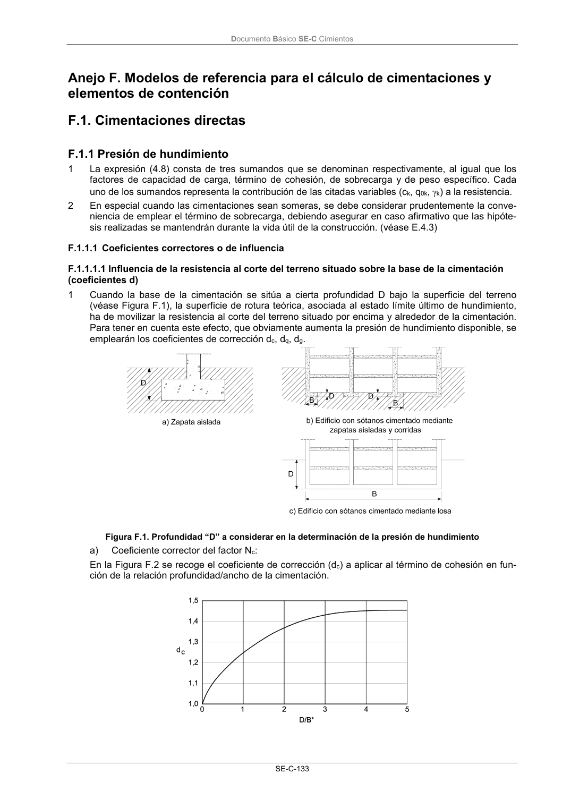

DB-SE-C Cimientos · edición 2019-12-20 · capa oficial
Documento DB-SE-C-oficial · SHA-256 del PDF a71133f4b0dca253e45ea3071c70f2a512354bcc5cd841bf89b1a502f567ac5e
Página física 138 de 165.
Copia fiel del PDF fuente · Fuente oficial
Ficha de la disposición en la fuente oficial
Formato: Texto de la página (Markdown)
Documento Básico SE-C Cimientos SE-C-133 Anejo F. Modelos de referencia para el cálculo de cimentaciones y elementos de contención F.1. Cimentaciones directas F.1.1 Presión de hundimiento 1 La expresión (4.8) consta de tres sumandos que se denominan respectivamente, al igual que los factores de capacidad de carga, término de cohesión, de sobrecarga y de peso específico. Cada uno de los sumandos representa la contribución de las citadas variables (ck, q0k, k) a la resistencia. 2 En especial cuando las cimentaciones sean someras, se debe considerar prudentemente la conve- niencia de emplear el término de sobrecarga, debiendo asegurar en caso afirmativo que las hipóte- sis realizadas se mantendrán durante la vida útil de la construcción. (véase E.4.3) F.1.1.1 Coeficientes correctores o de influencia F.1.1.1.1 Influencia de la resistencia al corte del terreno situado sobre la base de la cimentación (coeficientes d) 1 Cuando la base de la cimentación se sitúa a cierta profundidad D bajo la superficie del terreno (véase Figura F.1), la superficie de rotura teórica, asociada al estado límite último de hundimiento, ha de movilizar la resistencia al corte del terreno situado por encima y alrededor de la cimentación. Para tener en cuenta este efecto, que obviamente aumenta la presión de hundimiento disponible, se emplearán los coeficientes de corrección dc, dq, dg. Figura F.1. Profundidad “D” a considerar en la determinación de la presión de hundimiento a) Coeficiente corrector del factor Nc: En la Figura F.2 se recoge el coeficiente de corrección (dc) a aplicar al término de cohesión en fun- ción de la relación profundidad/ancho de la cimentación.
